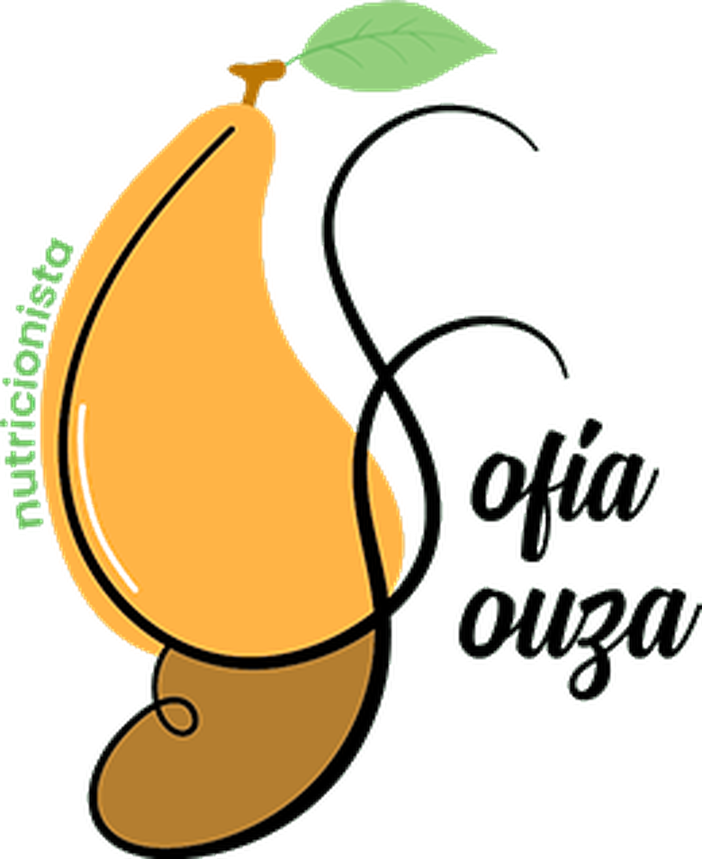

Duas propostas, qual combina mais com você?
Mesma identidade visual, com focos de público diferentes.
Proposta A
Materno-infantil e neurodivergentes
Conversa direto com mães, gestantes e famílias de crianças neurodivergentes. Posiciona a Sofía como especialista nesse nicho.
Ver proposta → Proposta BPúblico geral
Fala com adultos, gestantes e crianças, com a área materno-infantil e neurodivergente como diferencial. Ideal para começar com um público mais amplo.
Ver proposta →